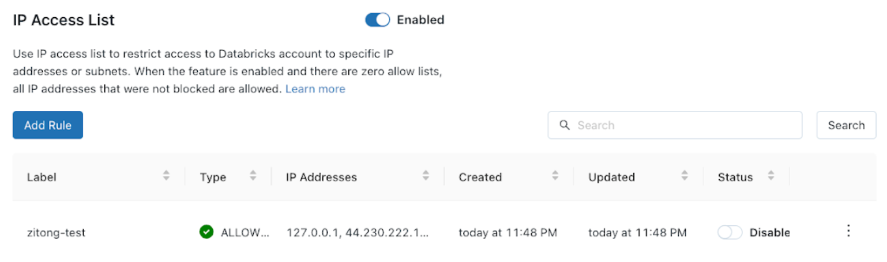

Configure IP access lists for the account console
This article describes how to configure IP access lists for the Databricks account console UI. You can also use the Account IP Access Lists API. IP access lists for the account console does not affect IP access lists for workspaces.
Requirements
This feature requires the Enterprise pricing tier.
IP access lists support only Internet Protocol version 4 (IPv4) addresses.
Enable IP access lists
Account admins can enable and disable IP access lists for account console. When IP access lists is enabled, users can only access the account console through IPs on the allow list. When IP access lists is disabled, all existing allow lists or block lists are ignored and all IP addresses can access the account console. By default, new IP access lists for the account console take effect within a few minutes.
As an account admin, go to the account console.
In the sidebar, click Settings.
On the Security tab, click IP Access List.
Set the Enabled/disabled toggle to Enabled.
Add an IP access list
As an account admin, go to the account console.
In the sidebar, click Settings.
In the Security tab, click IP Access List.
Click Add rule.

Choose whether to make an ALLOW or BLOCK list.
In the label field, add a human-readable label.
Add one or more IP addresses or CIDR IP ranges, with commas separating them.
Click Add rule.
Delete an IP access list
As an account admin, go to the account console.
In the sidebar, click Settings.
In the Security tab, click IP Access List.
On the row for the rule, click the kebab menu
 on the right, and select Delete.
on the right, and select Delete.Confirm deletion in the confirmation popup that appears.